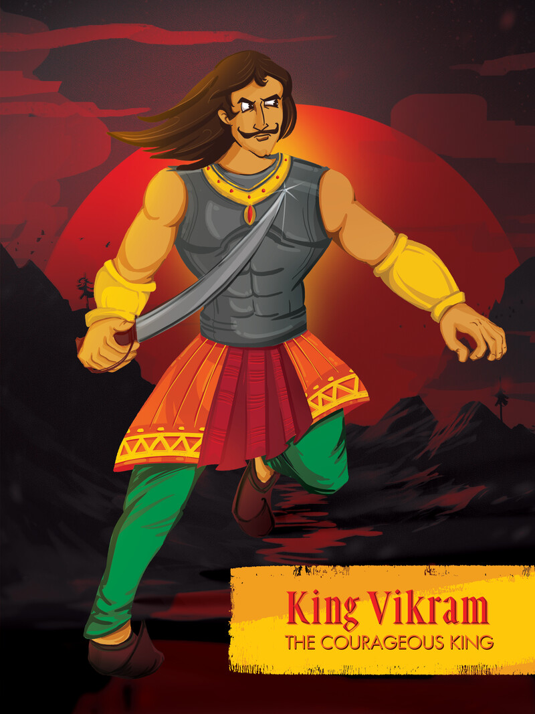

1. વિક્રમ બેતાલની શરૂઆતની વાર્તા |
વિક્રમ બેતાલની શરૂઆતની વાર્તા કંઈક આવી છે. તે લાંબા સમય પહેલા થયું હતું. રાજા વિક્રમાદિત્ય ઉજ્જયની નામના રાજ્યમાં શાસન કરતા હતા. રાજા વિક્રમાદિત્યનો ન્યાય, કર્તવ્યનિષ્ઠા અને પરોપકાર આખા દેશમાં પ્રખ્યાત હતા. આ જ કારણ હતું કે દૂર-દૂરથી લોકો તેમના દરબારમાં ન્યાય મેળવવા આવતા હતા. રાજા દરરોજ પોતાના દરબારમાં લોકોની સમસ્યાઓ સાંભળતો અને તેનું નિરાકરણ કરતો.
|  |
તે માત્ર એક દિવસની બાબત છે. શાહી દરબારની સ્થાપના કરવામાં આવી હતી. ત્યારે જ એક સાધુ વિક્રમાદિત્યના દરબારમાં આવે છે અને રાજાને ફળ આપીને ચાલ્યો જાય છે. રાજા તે ફળ ખજાનચીને આપે છે. તે દિવસથી સાધુ દરરોજ રાજાના દરબારમાં આવવા લાગ્યા. તેનું રોજનું કામ રાજાને ફળ આપવાનું અને ચૂપચાપ ચાલ્યા જવાનું હતું. રાજાએ સાધુ દ્વારા આપવામાં આવતું ફળ પણ ખજાનચીને રોજ આપ્યું. આમ કરતાં કરતાં લગભગ 10 વર્ષ વીતી ગયા.
એક દિવસ જ્યારે સાધુ ફરીથી રાજાના દરબારમાં આવે છે અને ફળ આપે છે, યારે આ વખતે રાજાએ ખજાનચીને ફળ આપવાને બદલે ત્યાં હાજર પાળેલા વાંદરાને આપી દીધું. આ વાંદરો કોઈ સિક્યોરિટી ગાર્ડનો હતો, જે અચાનક છૂટી જાય છે અને રાજા પાસે આવે છે.
જ્યારે વાંદરો ફળ ખાવા માટે ખેંચે છે, ત્યારે ફળની વચ્ચેથી એક કિંમતી રત્ન નીકળે છે. તે રત્નની ચમક જોઈને રાજદરબારમાં હાજર દરેક લોકો આશ્ચર્યચકિત થઈ જાય છે. રાજા પણ આ દૃશ્ય જોઈને આશ્ચર્યચકિત થઈ જાય છે. રાજા ખજાનચીને સાધુ દ્વારા અગાઉ આપેલા તમામ ફળો વિશે પૂછે છે.
રાજા પૂછે છે ત્યારે ખજાનચી કહે છે કે મહારાજ, મેં એ બધાં ફળો શાહી તિજોરીમાં સુરક્ષિત રાખ્યા છે. હું હવે એ બધાં ફળો લાવીશ. થોડા સમય પછી, ખજાનચી આવે છે અને રાજાને કહે છે કે બધા ફળો સડી ગયા છે. કિંમતી રત્નો તેમની જગ્યાએ બાકી છે. આ સાંભળીને રાજા ખૂબ જ ખુશ થાય છે અને તમામ રત્નો ખજાનચીને સોંપી દે છે.
આગલી વખતે જ્યારે સાધુ ફળ લઈને ફરી વિક્રમાદિત્યના દરબારમાં પહોંચે છે, ત્યારે રાજા કહે છે, “સાધુ, જ્યાં સુધી તમે મને ન કહેશો કે તમે મને દરરોજ આટલી કિંમતી ભેટ કેમ આપો છો ત્યાં સુધી હું તમારું ફળ સ્વીકારીશ નહીં?
રાજાની આ વાત સાંભળીને સાધુ તેને એકાંત સ્થળે જવાનું કહે છે. તેને એકલા લઈ જઈને સાધુ રાજાને કહે છે કે તેણે મંત્રોનો અભ્યાસ કરવો છે અને તે અભ્યાસ માટે તેને એક બહાદુર માણસની જરૂર છે. હું તમારા કરતાં બહાદુર કોઈ શોધી શકતો નથી, તેથી હું તમને આ કિંમતી ભેટ આપું છું.
સાધુની વાત સાંભળીને રાજા વિક્રમાદિત્ય તેને મદદ કરવાનું વચન આપે છે. પછી સાધુ રાજાને કહે છે કે આગામી અમાવાસ્યાની રાત્રે તેણે નજીકના સ્મશાનગૃહમાં આવવું જોઈએ, જ્યાં તે મંત્ર સાધનાની તૈયારી કરશે. આટલું કહીને સાધુ ત્યાંથી ચાલ્યા જાય છે.
અમાવસ્યાનો દિવસ આવતાની સાથે જ રાજાને સાધુના શબ્દો યાદ આવે છે અને તેના વચન મુજબ સ્મશાન જાય છે. રાજાને જોઈને સાધુ ખૂબ ખુશ થાય છે. સાધુ કહે, “હે રાજા, તમે અહીં આવ્યા, મને બહુ આનંદ થયો કે તમારી વાત યાદ આવી. હવે અહીંથી પૂર્વ તરફ જાઓ. ત્યાં એક મહાન સ્મશાન મળશે. એ સ્મશાનગૃહમાં એક વિશાળ ગુલાબનું ઝાડ છે. તે ઝાડ પર એક મૃતદેહ લટકતો જોવા મળે છે. તમારે એ લાશ મારી પાસે લાવવી પડશે. સાધુની વાત સાંભળીને રાજા સીધો મૃતદેહ લાવવા જાય છે.
મહાન સ્મશાનગૃહમાં પહોંચ્યા પછી, રાજાએ એક વિશાળ રોઝવૂડના ઝાડ પર એક મૃતદેહ લટકતો જોયો. રાજા તેની તલવાર ખેંચે છે અને ઝાડ સાથે બાંધેલી દોરી કાપી નાખે છે. તાર કાપતાની સાથે જ મૃત શરીર જમીન પર પડે છે અને જોરથી ચીસોનો અવાજ સંભળાય છે.
દર્દનાક ચીસો સાંભળીને રાજાને લાગે છે કે કદાચ આ કોઈ મૃત વ્યક્તિ નથી, પણ જીવિત વ્યક્તિ છે. થોડા સમય પછી, જ્યારે ડેડ બોડી જોરથી હસવા લાગે છે અને પછી ઝાડ પર લટકી જાય છે, ત્યારે વિક્રમ સમજે છે કે આ ડેડ બોડી બેતાલના કબજામાં છે. ઘણા પ્રયત્નો પછી, વિક્રમ બેતાલને ઝાડ પરથી ઉતારે છે અને તેના ખભા પર લટકાવી દે છે.
આ પર બેતાલ વિક્રમને કહે છે, “વિક્રમ, હું તારી હિંમત સાથે સંમત છું. તમે બહુ બહાદુર છો. હું તારી સાથે આવીશ, પણ મારી એક શરત છે કે આખા રસ્તે તું કશું બોલીશ નહિ.” વિક્રમ માથું હકારે છે અને બેતાલ સાથે સંમત થાય છે
આ પછી, બેતાલ વિક્રમને કહે છે કે રસ્તો લાંબો છે, તેથી આ માર્ગને રોમાંચક બનાવવા માટે, હું તમને એક વાર્તા કહું. તો આ રાજા વિક્રમ, યોગી અને બેતાલની વિગતવાર વાર્તા હતી. અહીંથી બેતાલ પચીસીની 25 વાર્તાઓની સફર શરૂ થાય છે, જે બેતાલ એક પછી એક વિક્રમને સંભળાવે છે. વિક્રમ-બેતાલ વાર્તાઓના આ ભાગમાં, તમને બેતાલ પચીસીની બધી વાર્તાઓ એકસાથે વાંચવા મળશે.
રાજાએ હંમેશા વિક્રમાદિત્યની જેમ હિંમતવાન અને બહાદુર હોવો જોઈએ. ત્યારે જ તે પોતાના લોકોનું રક્ષણ કરી શકે છે.